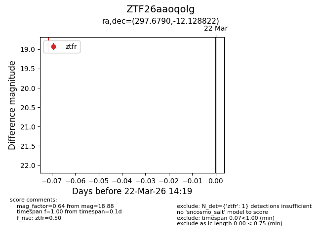
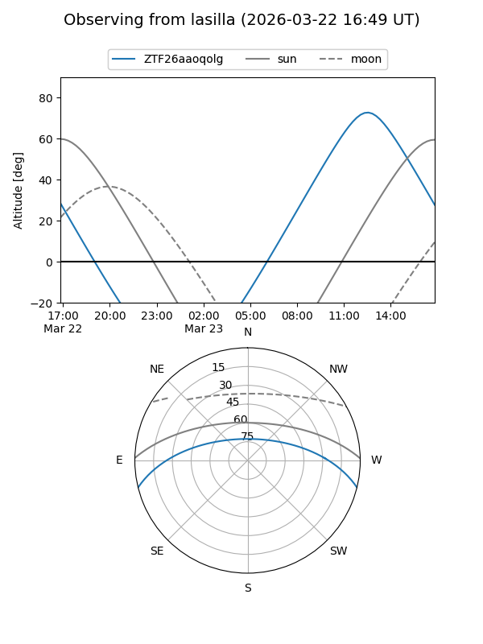
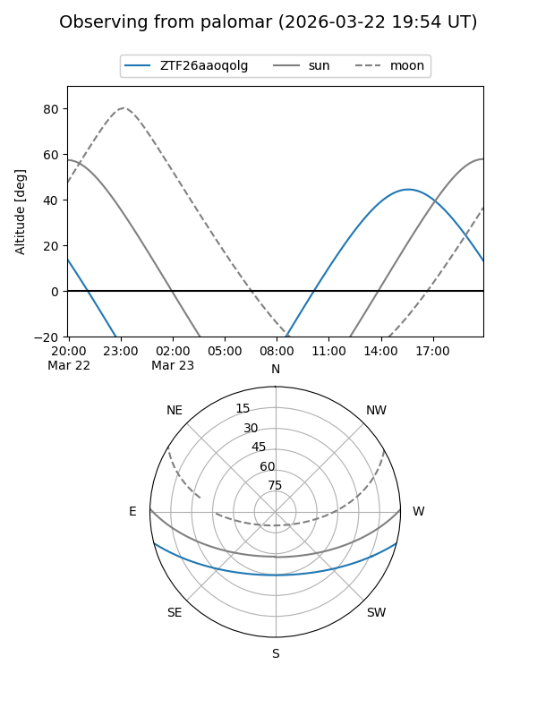

ZTF26aaoqolg
Target ZTF26aaoqolg at 2026-03-22 14:21
Aliases and brokers:
FINK: link
Lasair: link
ALeRCE: link
alt names
ZTF26aaoqolg (ztf,fink_ztf)
Coordinates:
equatorial (ra, dec) = 297.6790,-12.12882
equatorial (HMS+DMS) = 19:50:42.95,-12:07:43.76
galactic (l, b) = (28.5172,-18.56387)
Flags:
Photometry:
last ztfr=18.88
1 ztfr detections
Lightcurve

Visibility


Additional plots